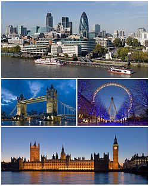

Lontoo on Yhdistyneen kuningaskunnan ja Englannin pääkaupunki. Lontoon asukasluvun määrittely on melko monimutkaista ja riippuu siitä, miten kaupunki määritellään. Lontoon hallintoalueen väkiluku on noin 9 miljoonaa ihmistä. Lontoon kaupunki/urbaanialueella asuu noin 11 905 500 ihmistä, kun taas Lontoon metropolialueella asuu arviolta 15 010 295 ihmistä, mutta Greater London Authorityn mukaan metropolialueella asuu noin 21 miljoonaa ihmistä. Suur-Lontoon pinta-ala on 1 572 neliökilometriä. Roomalaiset perustivat Lontoon valtakaudellaan noin vuonna 50. Kaupungin englanninkielisen nimen London sanotaan yleensä tulleen latinankielisestä nimestä Londinium.
